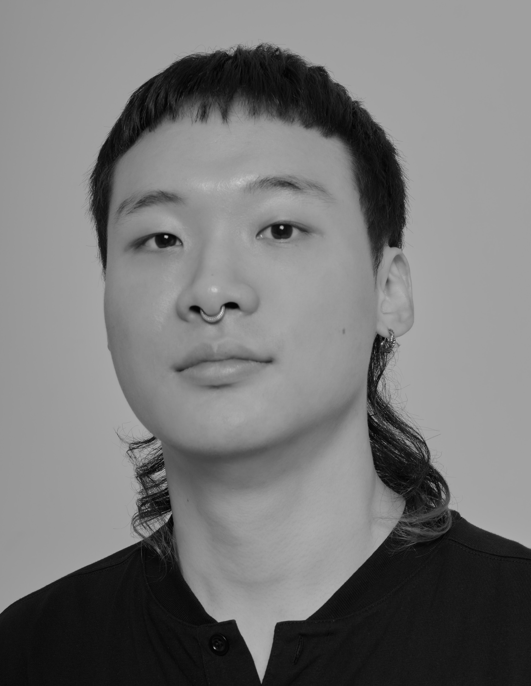

Jongmin "sakemin" Jung
정종민
Seoul, Republic of Korea
Master of Engineering @ MALer Lab of Artificial Intelligence Department in Sogang Univ. 2025
Bachelor of Art & Science @ Art & Technology in Sogang Univ. 2022
ML & DL Researcher
Media Technologist
Artist
Jongmin Sake Jung curates the confusing aspect of the contemporary world, under the agenda of real/fake along the advance of the technology.